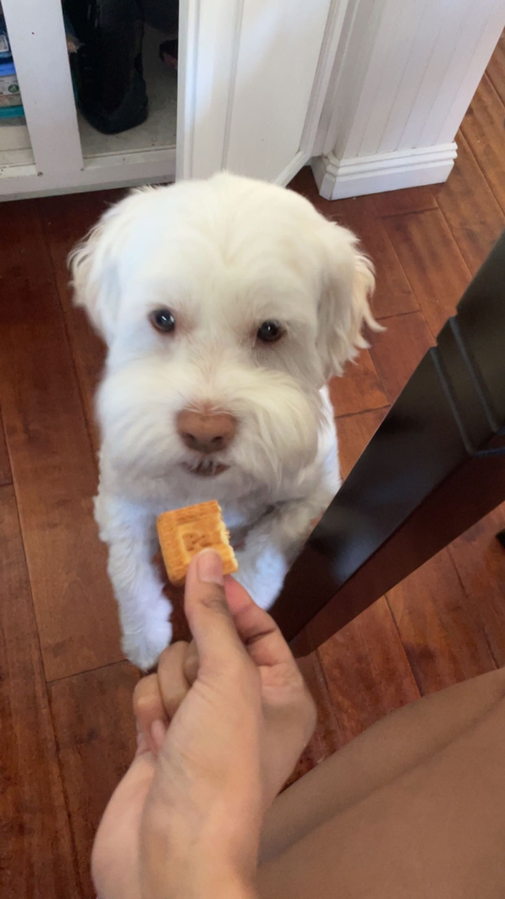

Bacon Q Dog

Photo Gallery


Likes
- Belly rubs
- Playing tug-of-war
- Sneaking onto the couch
Colleen van Lent © 2023
Pluto

Photo Gallery



Likes
- Eating his bone
- Going to the beach
- His toy duck
Aditi Kagalkar © 2023
Cody

Photo Gallery


Likes
- Traveling
- Lounging
- Tennis balls
Yuqing Zhang © 2023
Miumiu

Photo Gallery


Likes
- Eating chicken
- Sleeping
- Observing birds outside the window
Mengyun Liu © 2023
Peddie

Photo Gallery


Likes
- Swimming
- Running in the park
- Meeting new friends
Yiran Zheng © 2023